BenchVault v5.0.5
User Guide
Everything you can do in BenchVault, day to day.
BenchVault runs in your web browser. Whoever set it up for your lab will give you an address and an account — there is nothing to install on your computer.
If you are the one setting it up, start with the Install Guide. If you manage accounts and settings, see the Administrator Guide.
Signing in
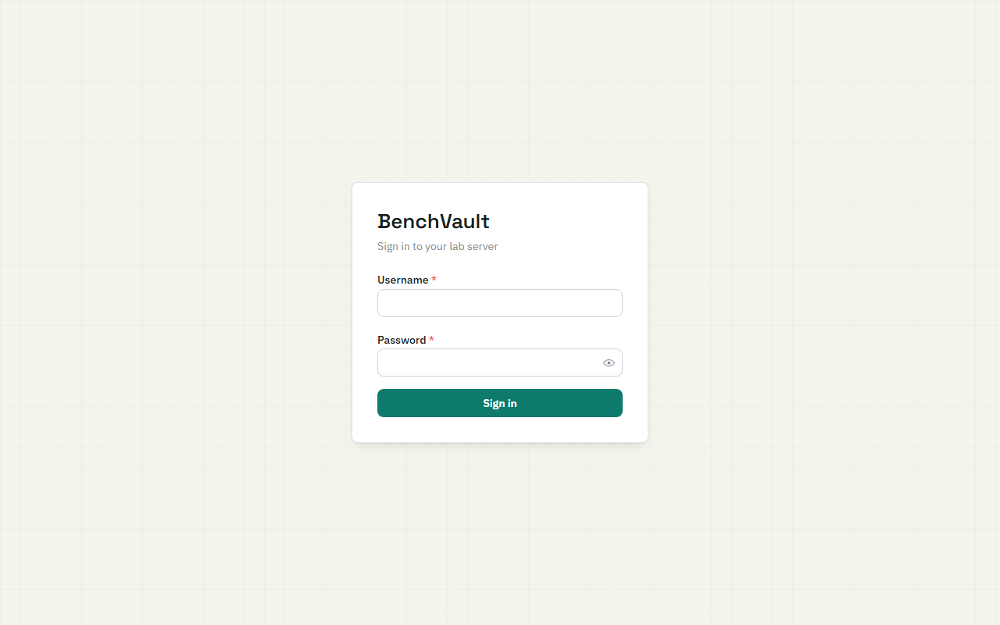
Open the address your lab uses and enter your username and password. If you don't have an account, ask a Master user in your group to create one — there is no self-signup.
The first time you sign in you may be asked to change your password. That happens when the person who created your account gave you a temporary one.
The dashboard
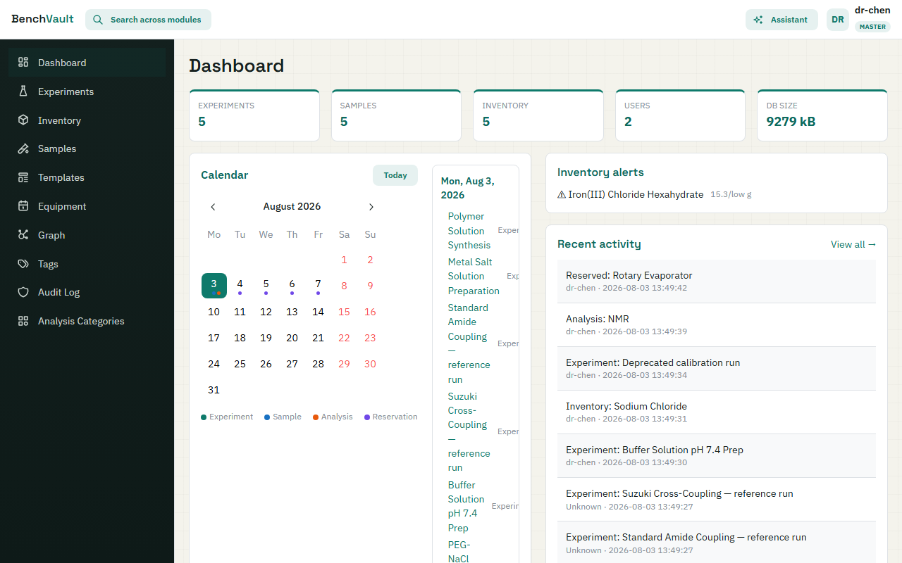
Your home screen, in three parts:
- Calendar — experiments, samples, analyses, and equipment bookings by date. Click a day to see what happened, then click any entry to open the record.
- Recent activity — what has changed across the lab lately. "View all →" opens the full history.
- Inventory alerts — chemicals running low, so you find out before you reach for an empty bottle.
Master users also see a totals strip across the top.
Don't see the activity feed? A Master user can turn it off for everyone. Same for Inventory — see Missing something? at the end.
Experiments
The heart of BenchVault. Everything else hangs off experiments.
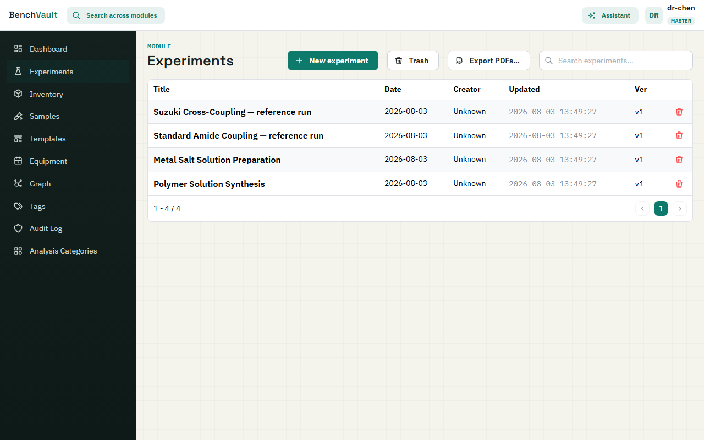
Creating one, step by step
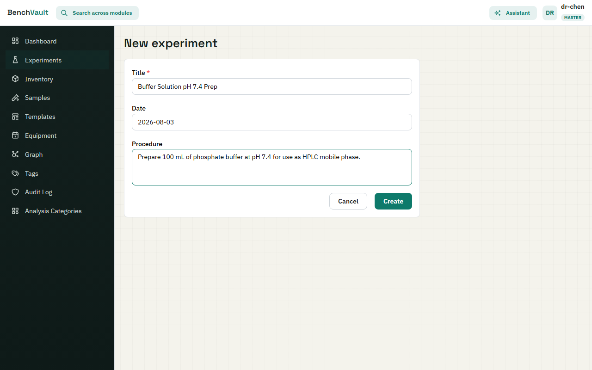
- Click Experiments in the sidebar.
- Click New Experiment.
- Give it a Title — the name you'd use talking to a colleague.
- Set the Date. Today's date is filled in for you.
- Write your Procedure — what you actually plan to do.
- Click Save.
That's the whole minimum. You now have a record you can add to as work progresses.
The detail page collects everything about that experiment: Reactants, Parameters, Tags, Attachments, and your Procedure. Each section is edited in place — there is no separate "edit mode" to remember to leave.
Once you have run something worth repeating, Save as template turns it into a reusable starting point. See Templates.
Reactants and the molarity calculator
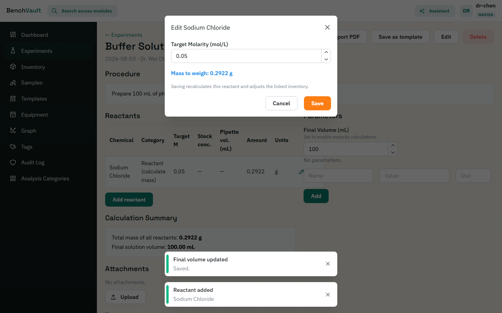
This is the part that saves real time at the bench.
- In Reactants, add a row and pick a chemical from your lab's inventory.
- Choose what it is: Reactant, Stock Solution, Solvent, or Other.
- Enter your target molarity.
BenchVault works out how much to weigh, or what volume to pipette from a stock solution, using the experiment's final volume. Change the final volume in Parameters and every reactant recalculates.
The Calculation Summary shows the numbers it derived.
Inventory moves with your reactants. If your lab has auto-deduct switched on, adding a reactant subtracts that quantity from stock automatically. Removing one asks whether to put the quantity back or leave it as consumed — answer honestly, because that is what keeps stock levels true.
Attachments
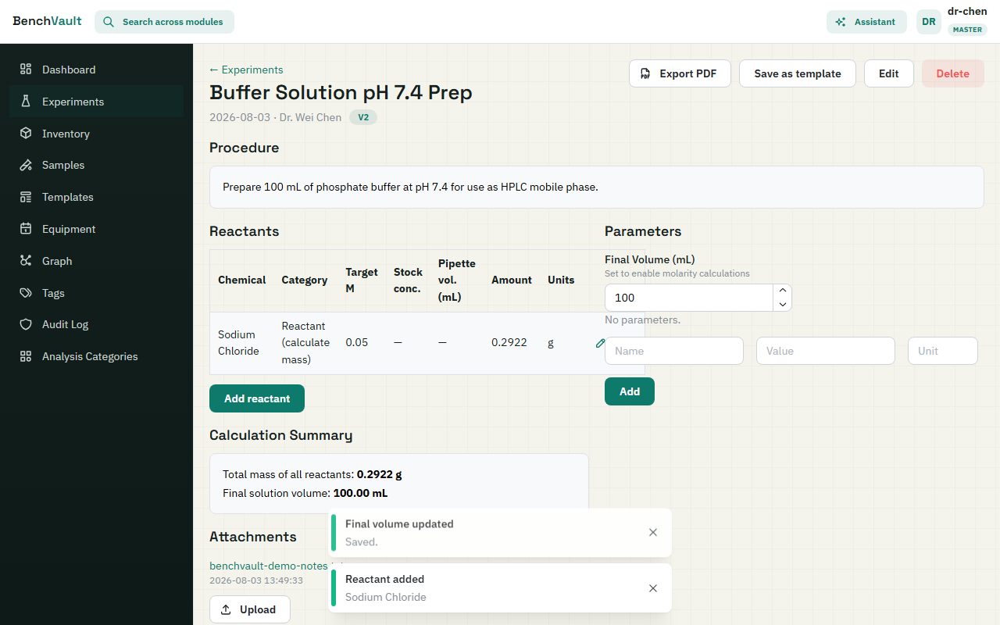
Drop in spectra, chromatograms, photos of your notebook — anything. Upload, download, and delete from the Attachments section.
Deleting and restoring
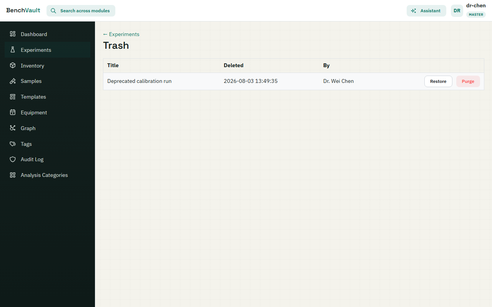
Move to trash removes an experiment from your list without destroying it. Open Trash to see what's there and Restore anything you need back.
Purge — permanent deletion — is Master-only, and BenchVault refuses if samples still reference the experiment. Deleting the parent of records you still have would leave those records orphaned.
Inventory
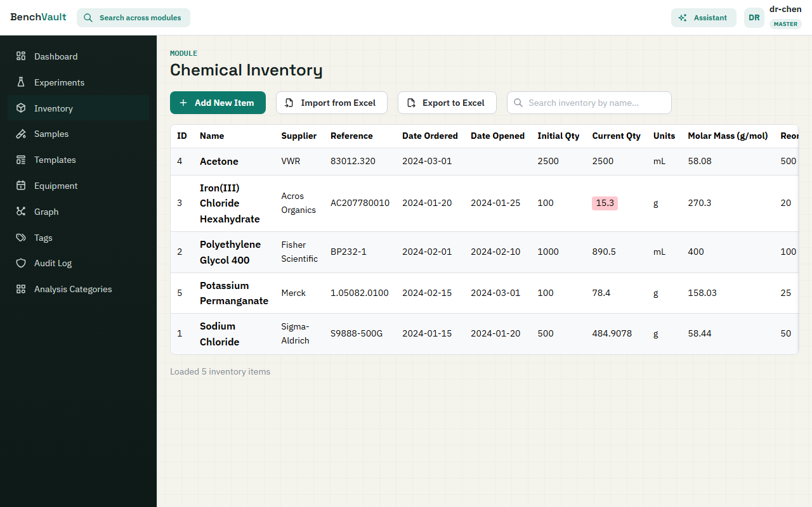
Your lab's chemical stock: what you have, how much, and where it lives.
- Search to find a chemical fast.
- Low-stock rows are highlighted so shortages are visible at a glance.
- Add, edit, and delete items. Deleting refuses if a chemical is still used by an experiment, and tells you so.
Bringing in an existing list
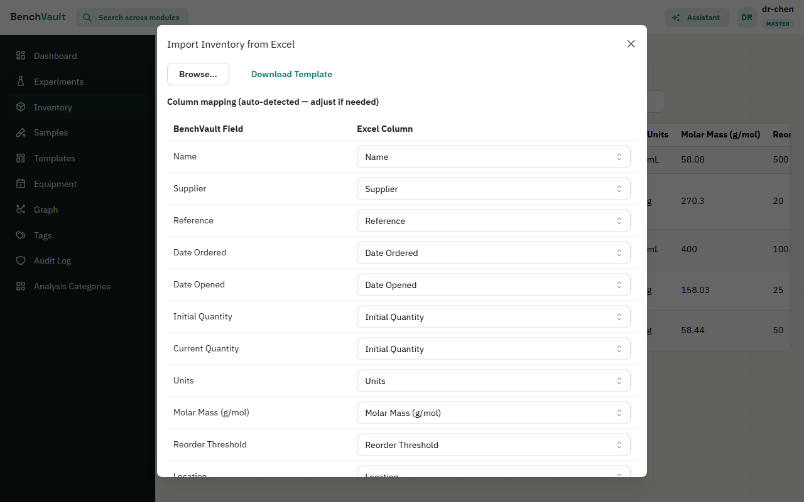
Already keep stock in a spreadsheet? Import it. BenchVault reads your Excel file, works out which column is which, and shows you a preview before anything is saved. Check the mapping looks right, then confirm. You can export back to Excel at any time.
Don't see Inventory in the sidebar? A Master user has switched the module off for your lab.
Samples
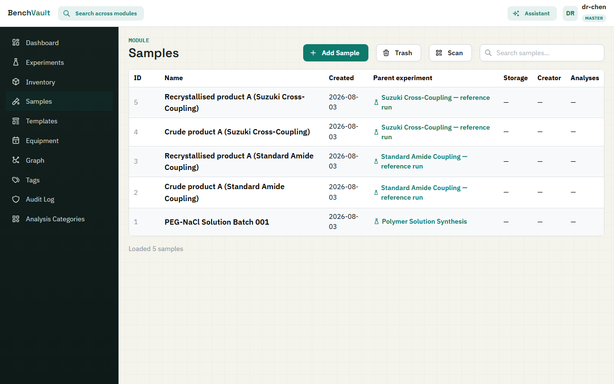
Samples are the physical things you produce — usually from an experiment.
Each sample records a name, a storage location, and its parent experiment, so you can always trace a vial in a freezer back to the work that made it.
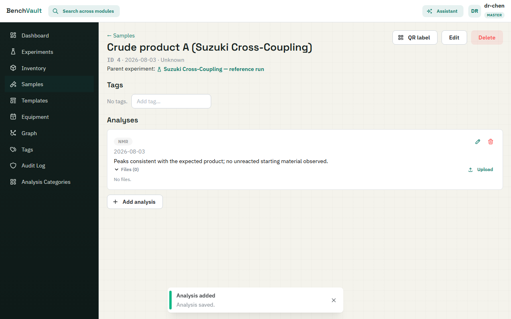
Open a sample to manage its Analyses. Each analysis has a type (NMR, HPLC, MS — your lab's Master curates this list), a date, and its own file attachments. That is where raw data files belong.
Samples have the same Move to trash / Restore / Master-only Purge safety net as experiments.
Templates
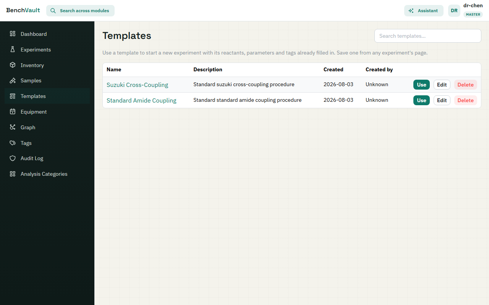
A template is an experiment worth repeating — its reactants, parameters, and tags captured for reuse.
- Save as template from any experiment's detail page.
- Starting from a template creates a new experiment with everything already filled in, ready to adjust.
- Rename or delete your own templates. Masters can manage anyone's.
For a procedure you run weekly, this removes the retyping and the chance of mistyping.
Equipment
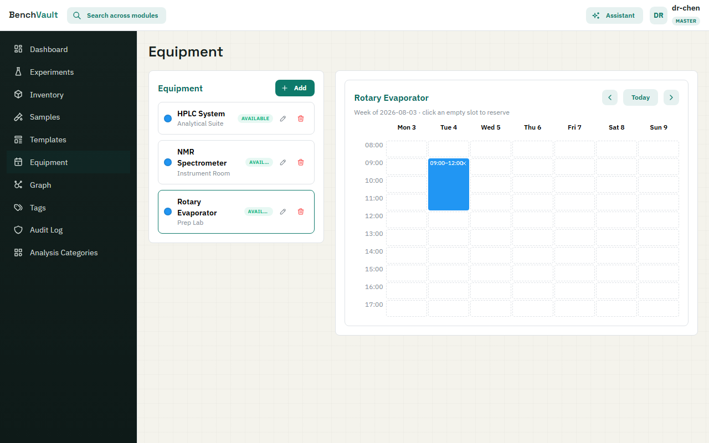
Book shared instruments so two people don't turn up at once.
- Choose an instrument.
- Click an empty slot on the weekly grid.
- Confirm the time.
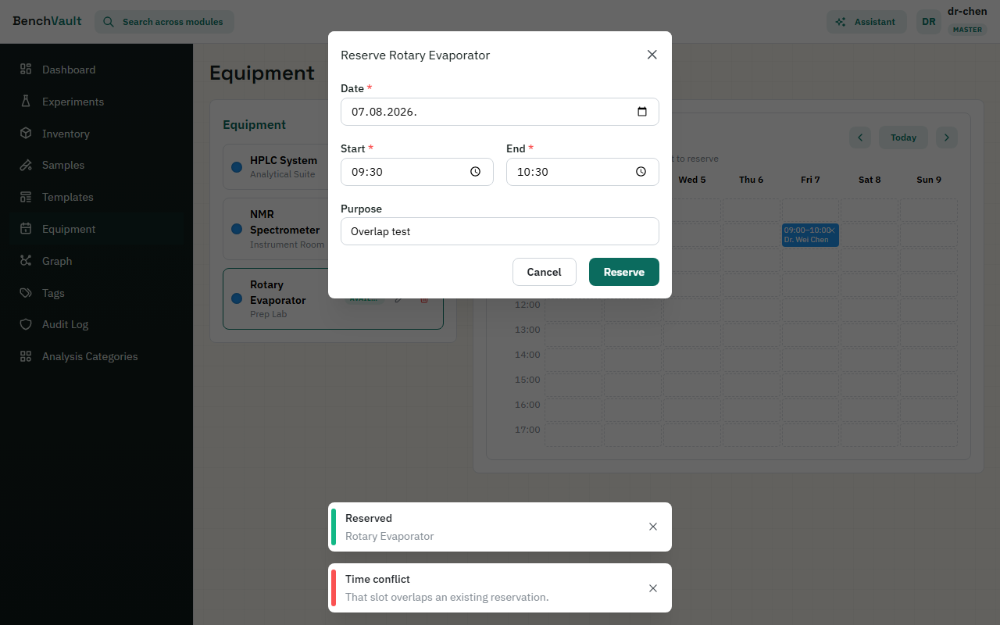
If someone already has that slot, BenchVault refuses the booking and says so — double-bookings are impossible rather than merely discouraged.
Cancel your own bookings any time; Masters can cancel anyone's. Bookings also appear on the dashboard calendar.
Graph
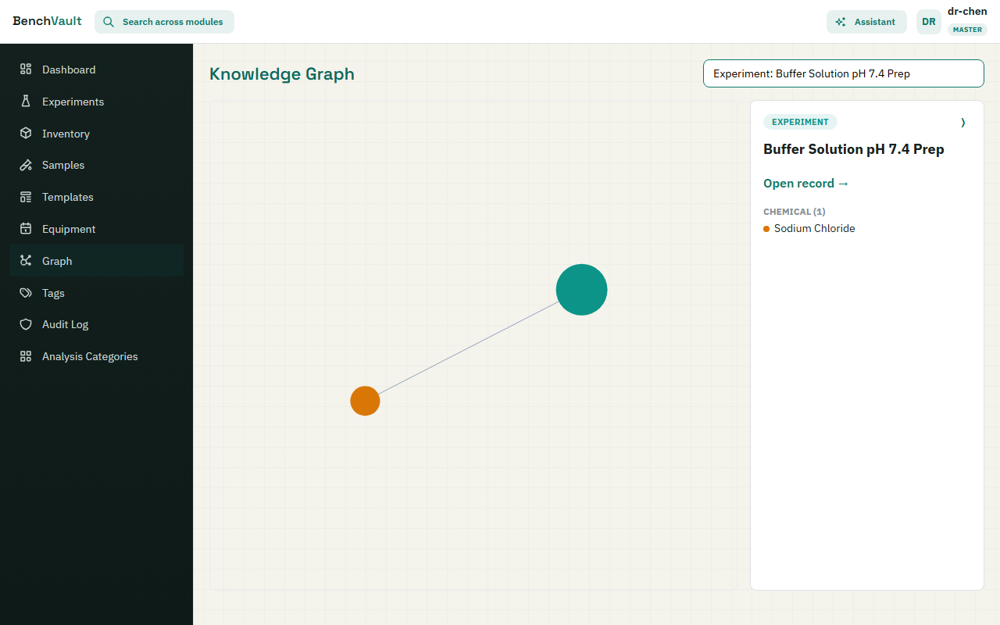
A visual map of how your lab's records connect.
Search for any record to put it at the centre, and see what it links to: samples from an experiment, analyses from a sample, records sharing a tag, or experiments using the same chemical. Click any node to re-centre on it and keep exploring.
Useful for "what came out of this work?" — a question that's tedious to answer by clicking through lists one at a time.
Search and tags
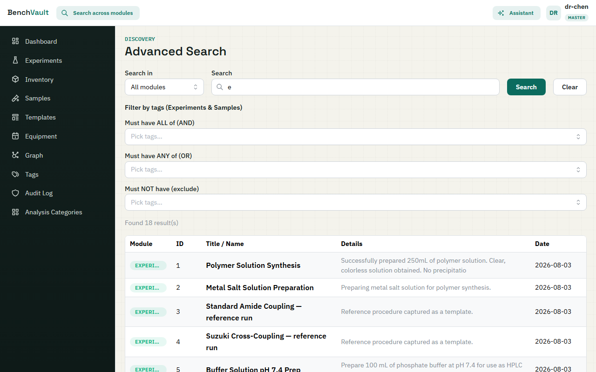
Search looks across every module at once — experiments, samples, inventory, equipment — and groups results by what they are.
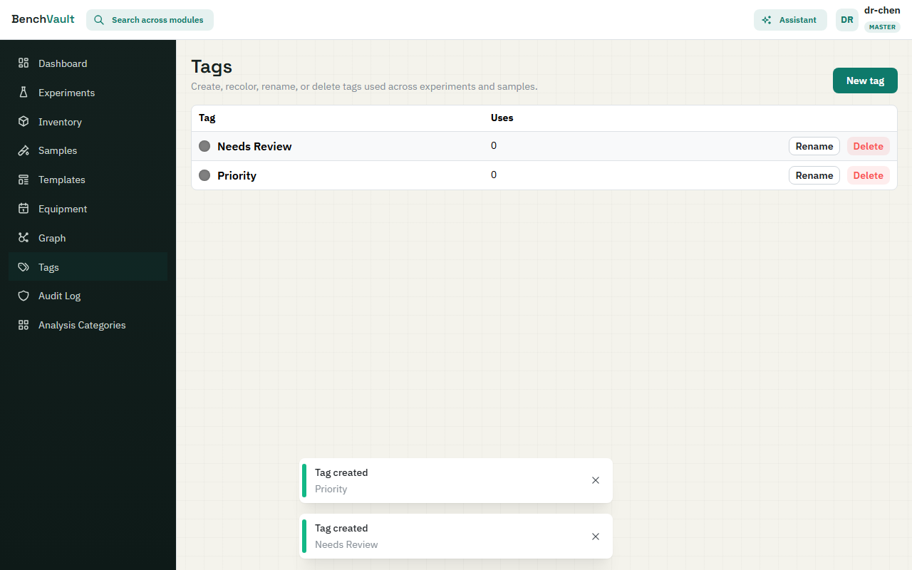
Tags are free labels you attach to experiments. The Tags page shows every tag in use across the lab and lets you tidy them up.
Agree on tags with your group. Consistent tags make the Graph and Search far more useful; ad-hoc ones just add noise.
The AI assistant
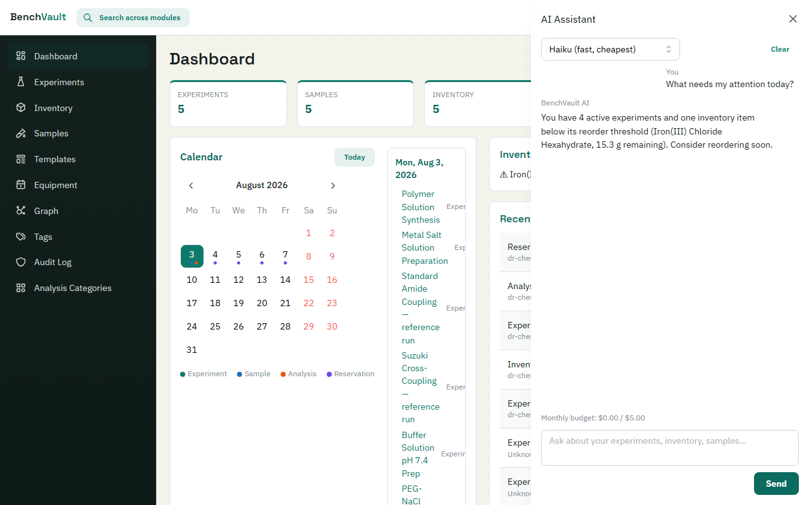
If your lab has configured it, an assistant drawer slides out from the side and answers questions about your lab's data in plain language.
It is off unless a Master has added an API key, and it is a drawer, not a page — it opens over whatever you're working on and closes again.
Anything you ask is sent to the configured AI provider for processing. If that matters for your work, check with whoever administers your deployment.
Your account
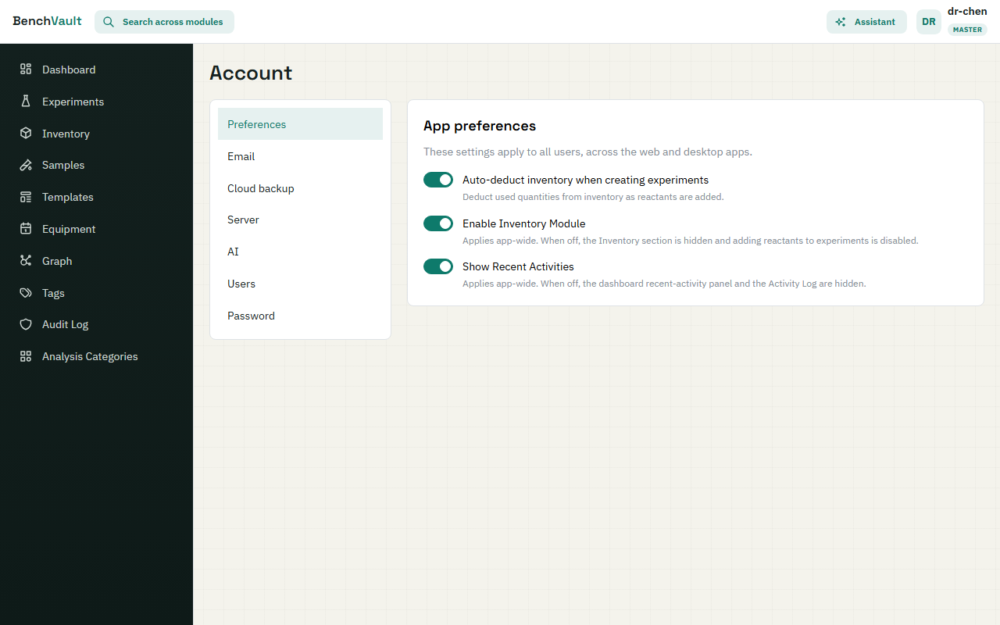
Under Account you can change your password.
Master users see considerably more here — users, email, backups, AI, and server settings. Those are covered in the Administrator Guide.
Why can't I edit this?
Two things decide what you can change.
Your role. Regular users edit their own records; Master users edit anything. Master-only screens — Audit Log, Analysis Categories, most of Account — don't appear in your sidebar at all if you're Regular, so if you can't see something described here, that's usually why.
Who created it. As a Regular user you can open and read a colleague's experiment, but not change it. Ask them, or ask a Master.
"Someone else saved first"
Occasionally you'll try to save and be told the record changed while you had it open. That means a colleague saved their edits between you opening the page and clicking save.
BenchVault refuses rather than silently discarding one of you. Reload to see their version, then reapply your change. It's a small annoyance that prevents a much worse one — quietly losing someone's work.
Missing something?
If a module described here isn't in your sidebar, it is almost always switched off rather than broken:
- Inventory and the Activity feed can each be disabled for the whole lab by a Master user.
- Audit Log and Analysis Categories are Master-only and never appear for Regular users.
Ask a Master user in your group — see the Administrator Guide.